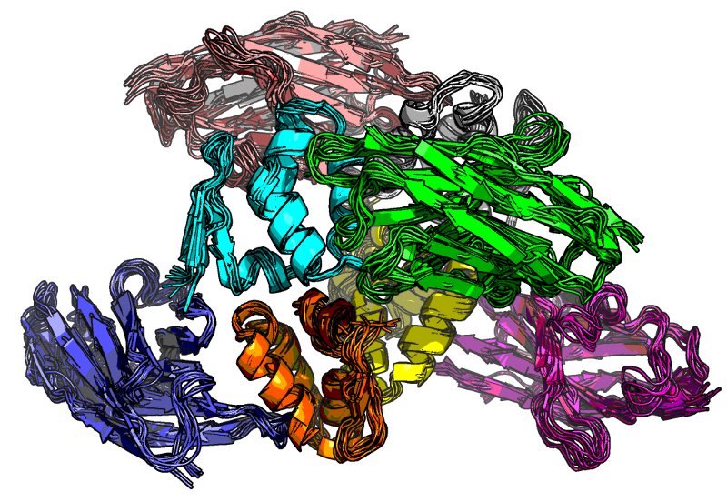
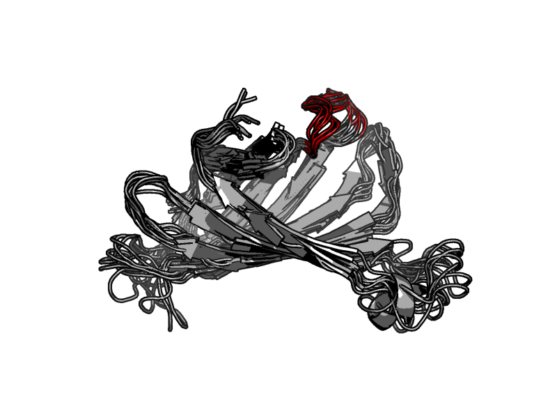
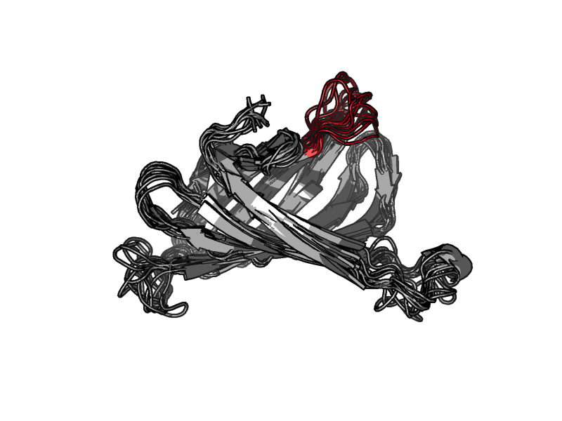
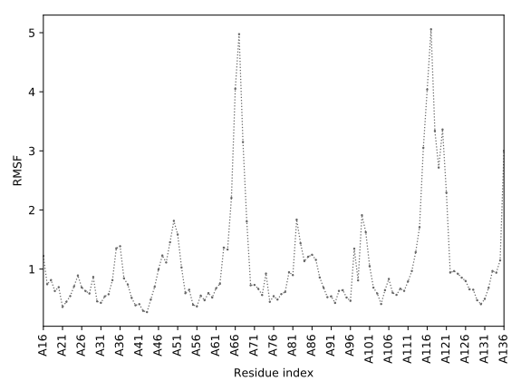
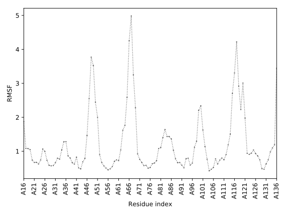
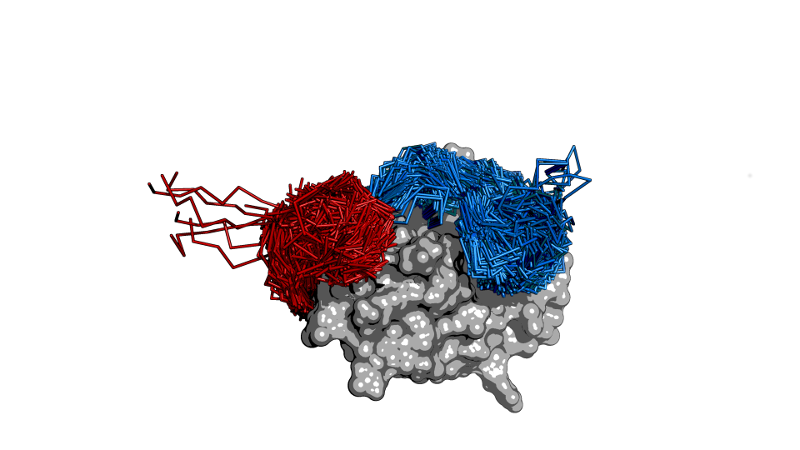
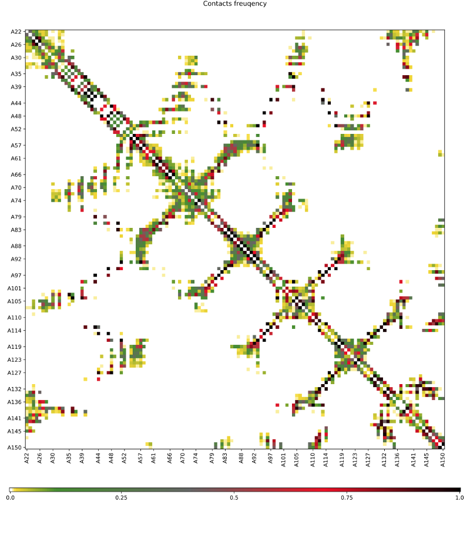
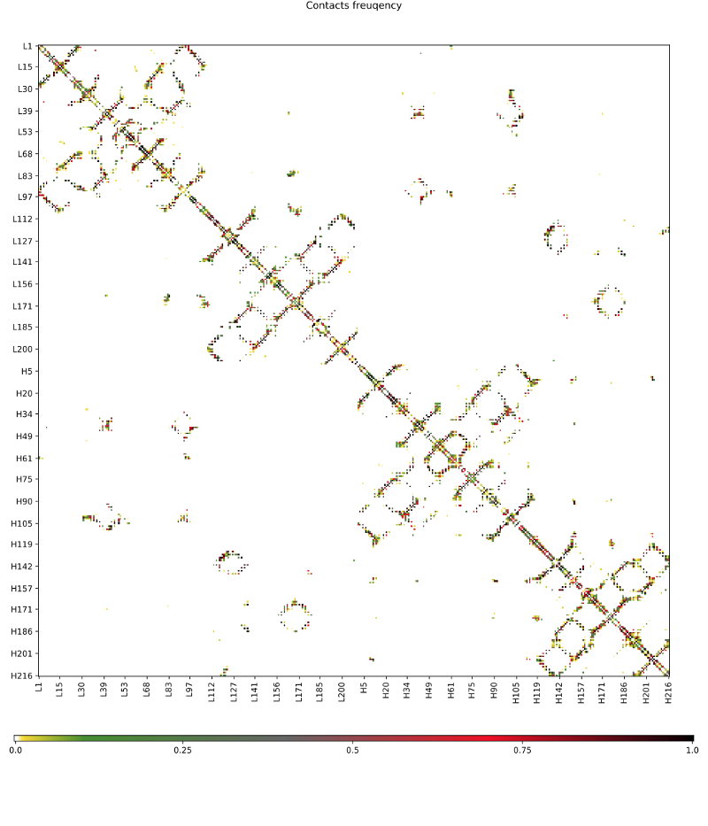
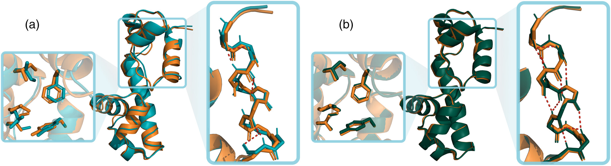

← Home | Modeling Scheme | Options | Examples | Output Analysis
3. Ready-to-Use Examples¶
3.1 Default simulation¶
To run CABS-flex using the default settings (see chapter 1.2) use the following command:
CABSflex –i PDB/FILE
For example:
CABSflex –i 1hpw
will download 1hpw.pdb file from PDB to cache and start simulation on default settings, while
CABSflex –i 1hpw.pdb
would try to open file 1hpw.pdb from working directory.
3.2 Visualizations¶
The following galleries showcase CABS-flex simulations for various protein targets, grouped by PDB ID. Each section includes a brief description of the protein and visualizations of different structural features.
1C9S: Transcription attenuation protein MtrB¶
Transcription attenuation protein MtrB is a key regulator in Bacillus subtilis. The simulations capture the dynamic behavior of this protein, highlighting its structural flexibility and conformational sampling.
1BL8: Potassium channel KcsA¶
Potassium channel (KcsA) from Streptomyces lividans is a classic model for ion channel studies. These visualizations show the protein's stability and local fluctuations within its functional domains.
1EOV: Aspartyl-tRNA synthetase¶
Free Aspartyl-tRNA synthetase (AspRS) from yeast. The free yeast aspartyl-tRNA synthetase differs from the tRNA(Asp)-complexed enzyme by structural changes in the catalytic site, hinge region, and anticodon-binding domain.
1GOY: Ribonuclease Bi¶
Endoribonuclease Ribonuclease Bi complexed with guanosine-3'-phosphate (3'-GMP). The simulations illustrate the mobility of the enzyme, particularly around the active site and complexed ligand.
1IJZ: Human IL-13¶
Solution Structure of Human IL-13. The ensemble of models reflects the flexible regions of this cytokine, which are essential for its biological signaling and receptor interaction.
3.3 Multiple chains¶
In contrast to web server version, standalone CABS-flex supports simulations of proteins composed from several chains. For example, the command:
CABSflex -i 4w2o
loads all protein chains from 4w2o PDB entry and is equivalent to
CABSflex -i 4w2o:ABCDEFGH
since 4w2o protein is composed from 8 chains named from A to H. To simulate only selected protein chains write appropriate chain symbols after the colon sign, e.g.:
CABSflex -i 4w2o:AEG
Same syntax works with path to the file on local drive:
CABSflex -i pdbs/4w2o.pdb:AEG

3.4 Changing global flexibility¶
In some cases default restraints are to be modified to achieve what is needed. One can need to only allow for small changes in backbone position, holding restraints for whole backbone, not only for elements with well defined secondary structure (as default restraints do). To change behavior of the whole input complex simply modify parameters with --protein-restraints option, which takes four arguments. Let us look on an example of streptavidin, e.g. PDB id 1KL3:
CABSflex -i 1kl3 --protein-restraints rigid 3 3.8 8.0
See full description of --protein-restraints option for information about all arguments passed. Only the first one was changed in respect to default settings.
It tells CABS-flex to prepare restraints for all residues, not only for residues in secondary structures, as it would be in case of default flexible first argument. Given arguments tells CABS, respectively:
- for which residues prepare restraints;
- how many nearby residues to skip;
- how low can the distance in space be to create restraint;
- how high can the distance in space be to create restraint.
And by modifying them one can adjust level of flexibility by changing the number of initial restraints.
Picture below shows 10 representative models for that run:

3.5 Changing local flexibility¶
Lets look again at the previous example with global flexibility set to all. Protein with PDB id 1KL3 is a streptavidin. It is known, that loop 45-51 plays important role in dynamics of that protein. Unfortunately with all mode the loop sticks to protein core to much. To deal with that problem, one can use --protein-flexibility or -f option that modifies local flexibility of chosen protein fragments.
To fix this particular simulation we prepare and load file telling CABS which part to modify and how much flexibility do we need. E.g. 1kl3flex.inp, which contains only one line:
45:A - 51:A 0.0
tells CABS-flex that the loop from 45th to 51th residue in chain A is to be as flexible as possible (0.0 — scale is revered). Other flexible regions can be defined in following lines.
With such file we are ready to run wanted CABS-flex simulation with command:
CABSflex -i 1kl3 -f 1kl3flex.inp
In pictures below there are 10 representative models for:
- default run with
allargument passed to--protein-restraints
- run with
allpassed to--protein-restraintsand flexible loop:

The loop is marked in red.
Movie below shows pseudotrajectory for default (bottom) and modified flexibility of 45-51 loop:
Plots below show RMSF for both runs. Note the difference in fluctuation of 45-51 loop:
- default run with
allargument passed to--protein-restraints

- run with
allpassed to--protein-restraintsand flexible loop:

It is also possible to read flexibility from b-factor column in PDB file. See --protein-flexibility FLEXIBILITY for more information.
3.6 Changing temperature¶
Default temperature is set to 1.4 and is slightly above temperature of the crystal (1.0 in CABS units), but for example modeling intrinsically disordered regions in proteins may demand temperatures similar to those at which structure folding is to be simulated. Here is the example of MDM2 with flexible C- and N-terminal loops.
To run simulation in default temperature use:
CABSflex -i 1z1m
It is equivalent to:
CABSflex -i 1z1m --temperature 1.4 1.4 --protein-restraints flexible
To perform simulation of the same protein in higher temperature simply run:
CABSflex -i 1z1m --temperature 2. 2.
Default temperature makes both terminal regions stick to protein core (upper picture), while in higher temperature one obtains much more extensive sampling of conformational space (lower picture):


3.7 Rebuilding representative models to all-atom representation¶
By default representative models are not rebuilt with Modeler package to all-atom representation (see the pipeline).
To force rebuild simply use --aa-rebuild flag:
CABSflex –i 1hpw --aa-rebuild
Make sure that representative models are returned by CABS-flex, so that option --pdb-output or -o is set to A (all: replicas, clusters and models) or at least to M (models). See full option description for more information.
3.8 Contact maps¶
Adding option -M or --contact-maps invokes creation of contact maps in contact_maps directory.
Contact maps in CABS-flex shows frequencies of contacts over full pseudotrajectory, in clusters and for representative models. In default mode, they are created basing on position of side chain centres of the masses (see chapter for CABS model representation) with the cutoff of 6.5 Angstroms. If representative models are rebuild to all-atom models — contact involves any atoms and cutoff is set to 5.5 Angstroms.
contact_maps directory contains contact map matrix plot (all.svg file) and data (all.txt) will be stored. To change image format use option --image-file-format with format used by matplotlib, e.g. png, pdf, ps, eps and svg. See matplotlib savefig documentation for more information. By default svg format is used.
Sample contact map for 1HPW:

TXT file contains residues PDB ids and number of frames in which they were in contact. Number of all frames is given in first comment line of the file:
# n=1000
A22 A23 302
A22 A24 301
A22 A25 677
A22 A26 162
...
For multiple chains subsequent chains will be marked on one axis:

It is possible to change default colors of contact maps. Scale is divided into six uneven regions and one can easily pass list of 6 colors in hex format to CABS-flex with option --contact-map-colors, e.g.:
CABSflex -i 1kpw -M --contact-map-colors /#ffffff /#777777 /#4b8f24 /#e80915 /#f2d600 /#000000
For now feature allowing users to pick their own number and width of ranges is not going to be added, but in case of urgency Python developers are welcome to modify method ContactMap.save_fig in module CABS.cmap.
3.9 High-accuracy all-atom reconstruction (cg2all)¶
The conversion of Coarse-Grained (CG) models back to all-atom descriptions is a critical step in the CABS-flex pipeline. Standard reconstruction methods, such as those based on Modeller (default --aa-rebuild), can occasionally introduce local distortions or fail to recover specific secondary structure elements.
Recent integration with deep learning-based reconstruction methods, specifically cg2all, has shown significant improvements. Comparisons reveal that cg2all reconstruction yields models with better physical realism, fewer steric clashes, and improved secondary structure recovery compared to traditional methods. Merging CABS-flex sampling with high-accuracy reconstruction provides high-quality all-atom models suitable for downstream applications like molecular docking or MD simulations.

Figure 8: Comparison of all-atom reconstruction quality using Modeller vs. cg2all.← CABS-flex Options | Next: Output Analysis